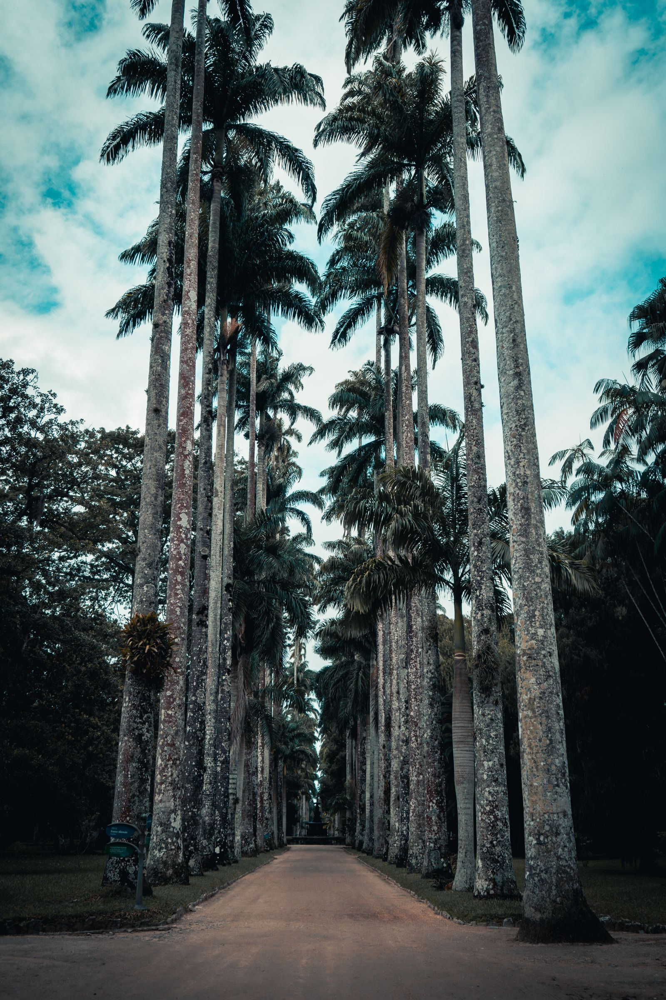

Explore em imagens
Um passeio visual pelas paisagens, pelas florestas e pelos animais do Rio de Janeiro.
Paisagens, praias e natureza
Clique em uma foto para ampliá-la. Para fechar, clique no × ou fora da imagem.
Paisagens


Flora


Fauna